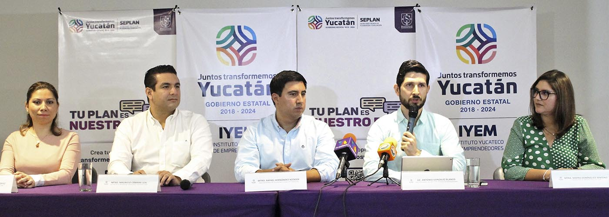
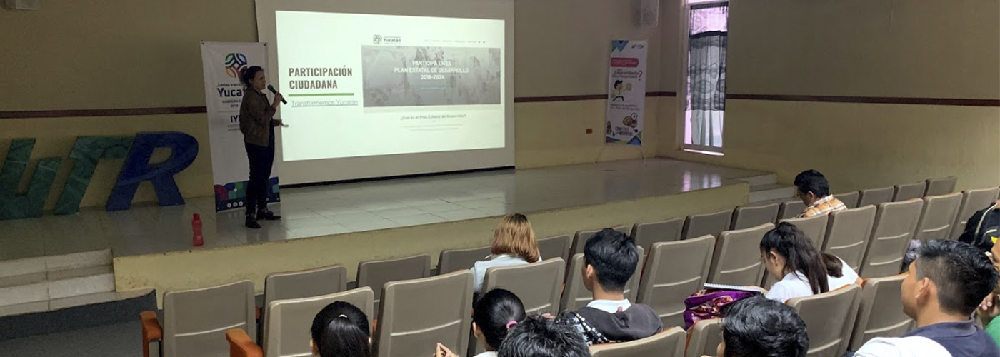
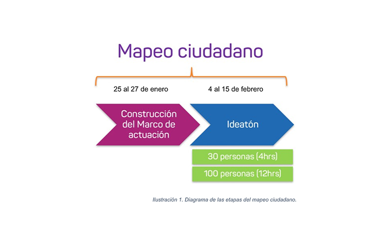
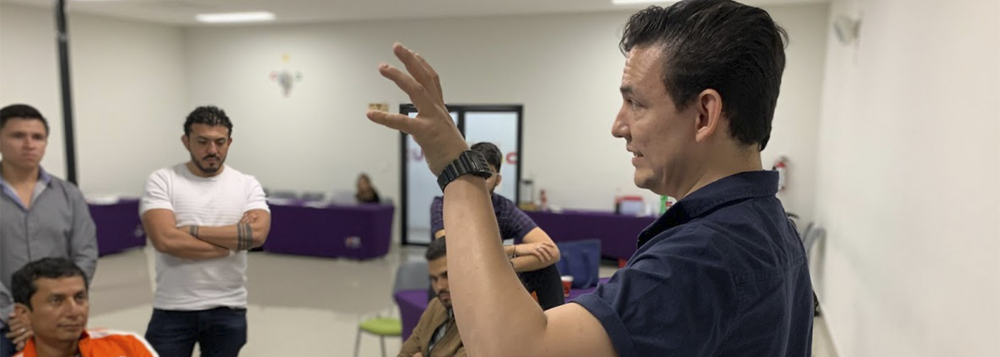

CONSTRUCCIÓN DE LA AGENDA PÚBLICA POR MEDIO DE IDEAS DE EMPRENDIMIENTO.
Participación ciudadana para el Plan Estatal de Desarrollo 2018-2024
La SEPLAN (Secretaría Técnica de Evaluación y Planeación) tiene como objetivo coordinar el proceso de planeación para realizar, monitorear, asesorar e implementar el Plan Estatal de Desarrollo (PED) del Estado de Yucatán para el sexenio en curso. Por lo cual, se establece un mapeo de proyectos estratégicos a implementar en las distintas entidades de gobierno así como con los ciudadanos yucatecos para dicho plan.
En estos trabajos en conjunto con el IYEM (Instituto Yucateco del Emprendedor), que por primera vez buscan integrar a la ciudadanía de manera activa en la generación de iniciativas para el Plan Estatal de Desarrollo y en el seguimiento del mismo, se ha desarrollado un programa integrado por dos capítulos:
- Mapeo Ciudadano.
- Diseñatón.
Mapeo ciudadano: Iniciativas con emprendimiento
El mapeo ciudadano es una iniciativa de participación que integra a las comunidades de emprendedores del estado de Yucatán y los impulsa a participar de manera activa en la conformación de iniciativas que ayuden a construir el plan estatal de desarrollo 2018-2024.

Objetivo: Integrar la red de emprendedores para que participen en una serie de actividades, las cuales consisten en talleres participativos de identificación de iniciativas ciudadanas que puedan contribuir dentro de las líneas de acción que serán plasmadas en el Plan Estatal de Desarrollo 2018-2024.
Planteamiento: El mapeo ciudadano de ideas e iniciativas permitirá a través de metodologías ágiles y talleres, identificar problemáticas dentro de un marco general para que puedan ser transformadas en iniciativas y/o modelos de negocio.
- Construcción del Marco de Actuación.
Objetivo: Delimitar a través de mesas de trabajo con expertos del ecosistema emprendedor, un marco de actuación de acuerdo con los ejes del plan estatal para definir las problemáticas del Estado que puedan ser susceptibles de generar estrategias y líneas de acción con una visión emprendedora.
- Generación de propuestas.
Objetivo: Realizar talleres participativos en 9 diferentes puntos del interior del Estado en los cuales los participantes identificarán las problemáticas locales dentro del marco de referencia previamente definido para priorizarlas y posteriormente generar propuestas de actuación.


SEDES VISITADAS
La metodología se replicó en 9 diferentes sedes con la participación de aproximadamente 260 personas con diferente perfil que proporcionaron desafios e ideas de emprendimiento para el Plan Estatal de Desarrollo.